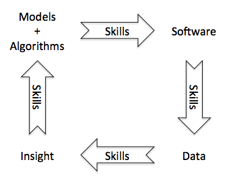

You Keep Using That Word
The first Workshop on Sustainable Software for Science: Practice and Experiences (WSSSPE) is going to be held in conjunction with Supercomputing 2013 on Sunday, November 17. After reading the papers on the workshop site, my reaction was:

My dictionary defines "sustainable" as "able to be maintained at a certain rate or level." People who work in public health or international development know that education is a prerequisite for sustainability. If people know how to do something for themselves, and understand why they should do it, they can keep it going and adapt it to their needs. This is why mass public health campaigns in the 1920s and 1930s taught people about germs and nutrition: if you know what tuberculosis and rickets are, you'll stop people spitting in public and make sure your kids get enough sunshine, even after the traveling nurse goes away.
This is why most of the papers I read didn't move me. Most are single-site or single-project experience reports; when they mention education and training, that's all the mention they get: the words "education and training". Others discuss topics ranging from software maturity models to the Semantic Web, but those too give no more than a bullet point to the fact that if scientists don't understand how to drive these things, they're not going to adopt and sustain them.
As just one example, Blanton and Lenhardt's "A User Perspective on Sustainable Scientific Software" starts by framing discussion of sustainability in terms of risk, but then says:
Hedging against this risk has several aspects, all related to the development of the software itself. In some rough order of increasing complexity, these range from adoption and adherence of software development best practices, to peer-review of software, to formal training in software engineering and related fields for scientists.
Respectfully, I think this is wrong-headed. Without training in software development, good software development practices will not be adopted: at best, they will be repeated by rote until someone says, "Why are we doing this?" at which point they will be shelved.
One paper that does give education and training a bit more space is "Initial Findings from a Study of Best Practices and Models for Cyberinfrastructure Software Sustainability", by Stewart, Wernet, Barnet, and Welch. They surveyed 5000 NSF-funded PIs (of whom 811 responded), then interviewed the leaders of a dozen projects. Unsurprisingly, they found that:
…the vast number of principal investigators and researchers in the scientific domain lack the training, expertise, awareness, time, and, in some cases, inclination or aptitude to become functionally proficient in these areas crucial to sustainability.
They go on to make some interesting proposals, including this one:
A small-business bootcamp designed around the tolerances and motivations of scientists and researchers should be developed to, at a minimum, provide an overview of these areas and proactively create an awareness of the key components required for sustainability.
They even advocate the creation of a software sustainability institute, presumably modeled on the one that's been so successful in the UK. But nowhere do they address the fact that it's pointless trying to maintain or reuse the kind of software most scientists write today. If we want to do that, we have to teach people how to write maintainable, reusable software.
Re-reading the notes I made when first going through these papers, I was struck by the fact that ones from groups that had been around a long time were more likely to talk about the importance of education. One example is the paper describing VisIt, which has a subsection called "Education" under the heading "Fostering Community". In it, they describe both the training classes they have run and the difficulties those classes encountered:
…an instructor goes through features one by one, and the students reproduce the results. The class has one- and two-day versions and has been very well received. The classes taught at computing centers appear to have a correlation to tool adoption. Unfortunately, in contrast with tutorials that can be easily offered at conferences, classes are a less traditional format for HPC tools. As a result, the class is taught less frequently and has generally only been taught at institutions who wish to provide training for their specific users.
Later, they say:
We have found that the developer team grows by existing developers hiring new developers at their own institution and training them. Often, the project spreads to new institutions from developer migration, not from new developers at a site picking up the tool and learning it in isolation. This may indicate a failure in terms of fostering developer community, but we note that the goal is hard; learning how to develop a program that exceeds a million lines of code is difficult even with excellent documentation.
They're right: developing on top of such a large code base is hard. The way we tackle similar difficulties in other fields is through training. We wouldn't expect an archeologist to figure out carbon dating on her own; why then do we expect her to do it with version control? And why do we act as if she should be able to tackle large, complex computing problems without training in such a fundamental skill?
Another paper I enjoyed came from the Kitware team, who have been building world-class software for more than fifteen years. Their visualization library was originally developed to support a textbook, which has clearly colored their view of the world:
…the standard of software engineering in science must be improved, and sustainable software ecosystems with meaningful credit must be realized. This is not simply limited to teaching scientists to write code; if sustainable software projects are to be established in science then issues such as testing, licensing, and collaboration must be addressed. Sufficient engineering discipline is required to realize robust foundations that can be extended through the use of code review, regression testing and proper citation and attribution of software used in research.
And then there is "Software Engineering as Instrumentation for the Long Tail of Scientific Software", by Huang and Lapp. They accurately diagnose the problem:
Successfully optimizing software to reduce or eliminate barriers to reuse takes training in the science of software engineering…which even more experienced researcher-developers often do not have. Those that do are not rewarded for it by the academic incentive structure, which by and large provides little recognition for effort devoted to engineering improvements unless it is immediately evident how such effort enables new science. Correspondingly, among many domain scientists, awareness of software engineering benefits and appreciation for its cost are low…
and propose concrete solutions. One is, "…changing the reward structure to better recognize the immediate and near-term benefits of well-engineered software", which isn't going to happen any time soon. The other:
…is reducing the costs to science [by] creating an effective infrastructure for scientists for securing software engineering services [from] a non-profit center-of-excellence model…
The center would pool the small and otherwise disparate fractions of software engineering effort. It would recruit personnel with deep training in software engineering and knowledge across a scientific discipline sufficient to collaborate effectively with scientists across a domain…
I believe that scientists and programmers can only collaborate effectively if the programmers understands the science and the scientists know how to build software. I also believe that the only way for anyone to learn how to do that is by building software, so an institute of this kind could only survive and thrive if its first priority was to educate the people it intends to help, just like rural clinics in the Depression.
I opened with a picture, so let me close with one as well:

Scientists needs coding skills to turn models and algorithms into working software. They need more of those skills to run that software, and to analyze the data it produces. They even need coding skills to translate new scientific insights into better models and algorithms, too, because as Feynman said, "What I cannot create, I do not understand." Training isn't the only requirement–we need community builders and facilitators to bring people together for the dialog that the training makes possible–but it sadly still seems to be the one that's talked about least.